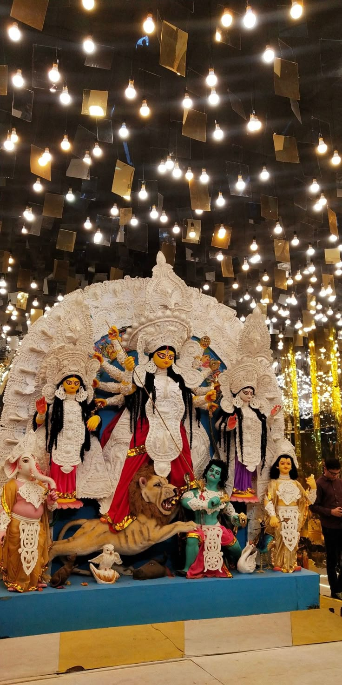
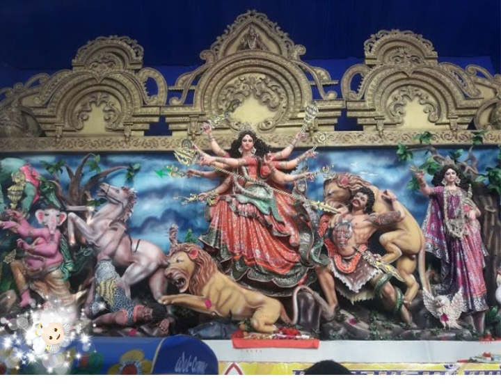
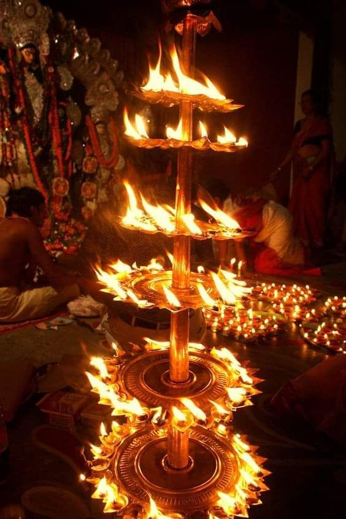

Welcome to the devotional celebration of Maa Durga in Sohsarai, Bihar Sharif. Discover the traditions, festive atmosphere, puja and aarti associated with this local Durga Puja celebration.
Explore Pandal 📍 Find LocationDiscover the religious traditions and community celebrations associated with Durga Puja in Sohsarai.
Sohsarai is an area of Bihar Sharif in Nalanda district, Bihar. Durga Puja is celebrated in Bihar Sharif with religious devotion and decorated pandals.
During Durga Puja, devotees visit pandals to pray to Maa Durga. The festival is associated with worship, aarti, decorations and community gatherings.
Sohsarai is one of the local areas associated with Bihar Sharif's festive celebrations. Its location makes it part of the city's wider Durga Puja pandal-visiting tradition.
📜 Since when has Maa Durga been worshipped here?
The exact year in which the Sohsarai Durga Puja tradition began could not be verified from reliable historical sources available for this page. We therefore do not claim an unconfirmed starting year. The local puja committee or long-time residents may be able to provide the correct history.
2026 pandal theme: The exact decoration, special attractions and programme details should be confirmed locally.
Important traditions associated with the Durga Puja festival.
Devotees offer prayers and seek blessings from Maa Durga during the festival.
Devotional prayers and aarti form an important part of the celebrations.
Decorative lighting and flowers can create a colourful festive atmosphere.
Families and visitors come together to take part in the festive spirit of Durga Puja.
Festival-inspired images. Tap an image to enlarge it.

🌺 Festival Decorations

✨ Colourful Celebration

🪔 Festive Atmosphere
These are illustrative festival images, not verified photographs of the actual Sohsarai pandal. Replace them with real local photographs when available.
Listen to devotional aarti and celebrate the blessings of Maa Durga.
May Maa Durga bless everyone with happiness, courage, peace and prosperity.
▶ Listen to Durga AartiThe actual Sohsarai pandal's aarti timings have not been verified. Please confirm them locally.
Search for Sohsarai in Bihar Sharif using Google Maps.
Open the map to search for the pandal and plan your route. The exact temporary pandal location may need local confirmation.
🗺️ Open Google Maps